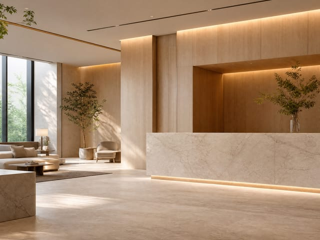

無謂而重複的工作
昨天做過的事，今天不應該再重新整理一次。
ClinicOS 不是從功能開始，
而是從一間診所的一天開始。
每一天，診所都在照顧重要的人。我們希望，每一天累積的資料、流程與經驗，都能成為下一天的開始，而不是重新開始。

昨天做過的事，今天不應該再重新整理一次。
診所打烊了，經營者的一天不應該還沒結束。
需要判斷時，資料應該已經在正確的位置。
一個人離開，不應該讓整套做法重新開始。
診所成長時，應該延伸的是方法，不是更多口頭交代。
工作應該接得下去，而不是從頭再問一次。
一天之中，我們反覆看見同樣的事。
08:30
第一位顧客到了，
資訊應該已經準備好。
10:00
有人改約、有人請假，
工作不應該因此失去順序。
12:30
一次療程結束，
留下的應該不只是完成紀錄。
15:00
一天結束以前，
不應該還有人四處尋找資料。
17:30
診所打烊之後，
不應該還要重新拼湊今天。
讓每一天，
都有下一步。
讓工作，
不必再靠記憶。
要決定的時候，
資料就在。
規模會變，
做法不必重來。
每一次留下的紀錄，都成為下一次決定的基礎。
新人不必從零開始，團隊也不必反覆重新說明。
診所完成的不只是今天的工作，也是下一步成長的能力。
而是讓一間診所成長之後，依然能從容運作。